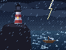
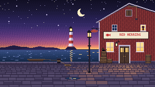
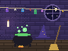
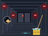
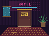

The Keeper's Last Log
The lighthouse went dark on the night of the storm. The keeper left a logbook, a locked sea chest and a very nervous parrot.

Adventure rooms · Old Harbour
Hand-built escape rooms in the spirit of the point-and-click adventures you grew up with. Look at everything, pick up whatever isn't nailed down, and use it on whatever is.
Every room is a story with a beginning, a twist and a door that opens. Hints are free, and nothing jumps out at you.

The lighthouse went dark on the night of the storm. The keeper left a logbook, a locked sea chest and a very nervous parrot.

Someone shrank the wizard's best robe. Find the counter-spell before he's back from the tower. Our gentlest room, and the best one for families.

You mop floors on a starship. The crew is asleep, the alarms are not, and the only one with a key card is you.

The Grand Neon Hotel, 1987. A guest checked into a room that isn't on any floor plan, and never checked out.
Pick a room and a time. You pay per group, not per head, and you can move the booking up to a day before.
Ten minutes of story and three house rules. Phones go in the lockers, curiosity comes along.
Ask for a hint over the walkie-talkie whenever you like. They're free, and nobody's counting.
A photo with the Sign of Glory, or the Sign of Shame. Then tea, and the puzzles you walked past.
One price for the whole room, whoever comes. Weekday afternoons are the quietest, and the cheapest.
| Players | Mon–Thu | Fri–Sun |
|---|---|---|
| 2 | €58 | €68 |
| 3 | €78 | €90 |
| 4 | €96 | €110 |
| 5 | €110 | €125 |
| 6 | €120 | €138 |
We got out with forty seconds left, and I still dream about that parrot.
Perfect for our kids, nine and eleven. Gentle hints, big laughs, and a very small robe.
Room 404 is properly hard. We failed. We're coming back in March.
The answers are printed in invisible ink. Reveal one at a time, like a proper adventurer.
Not in the book? , who is poking around this page somewhere.
Only Room 404 is a little spooky, and nothing jumps out at you. Every room has a big green button that opens the door, always.
Yes. The Wizard's Laundry works from about eight with an adult along. The lighthouse and Deck 9 suit twelve and up, and Room 404 is for sixteen and up.
The Wizard's Laundry and Deck 9 are step-free, with room for a wheelchair. The lighthouse has one ladder puzzle, and your game master can open it for you.
Call us and we'll shift you by up to fifteen minutes if the next group allows. After that, your hour gets a little shorter.
Every room plays in English, Finnish or Swedish. Tell us when you book, and the clues will speak your language.
Herring Quay 3, Old Harbour
The red warehouse under the fish.
Tram 4 to Fish Market, then two minutes along the quay. Bikes can park by the bollards; boats can tie up if they ask nicely.
Book a roomHow it works
Stand's Visitor API (beta) lets you replace the whole chat interface, while Stand still routes the conversation, runs your AI Stand-in and brings in your team. Here the chat is a pixel character in the style of late-80s adventure games. It pokes around the page, and when you click it, it walks up to the screen and talks in a parser-style message box.
There's no stand.js on this page. Everything you see is plain JavaScript in this folder, about 3,000 lines with no dependencies, talking to Stand's HTTP and WebSocket API.
site-id="demo", Stand Chat's shared demo site, which works on any domain. Its demo Stand-in follows the page's prompt, but won't speak for the made-up business. With your own Site ID, your own Stand-ins answer, and your team can take over.<adventure-chat
site-id="YOUR-SITE-ID"
world="main"
characters="vera otto kai"
prompt="The visitor is on Red Herring's website, talking to a pixel game master. Keep replies short.">
</adventure-chat>
<script type="module" src="adventure-chat.js"></script>world is the part of the page the character explores. characters lists files in characters/; add character="kai" to pick one instead of a random one. The prompt is private context for whoever answers. Any button with data-chat-open calls the character over too, like "Ask Vera" in the hint book.
stand-visitor.js is the whole network side: no UI, no dependencies. It follows the custom chat UI guide, including the parts that are easy to skip: recovering after a reload or a dropped socket, merging messages without duplicates, and never starting two conversations from one click.
// 1. Who can answer on this page? Public: no key, no token.
const offer = await get(`/v1/reps/find?siteId=${siteId}&page=${page}&greetingsEnabled=false`);
// 2. On the visitor's first message, start the conversation once.
const session = await post('/v1/sessions', {
siteId, page,
standinProfileId: offer.standinProfileId, // or repId, when a person answers
initialMessage: text,
includeOpeningGreeting: true, openingMessage: greeting, // What the character said first.
prompt, // Private context for the Stand-in and your team.
});
// session.visitorToken authorizes this one conversation. Keep it, with session.sessionId.
// 3. Later messages over HTTP. A retry reuses its clientMessageId, so nothing doubles.
await post(`/v1/sessions/${id}/messages`, { body: text, type: 'text', clientMessageId }, token);
// 4. Replies, typing and handoffs arrive over a WebSocket.
const socket = new WebSocket(`wss://api.stand.chat/ws/sessions/${id}?token=${token}`);
socket.onmessage = (event) => merge(JSON.parse(event.data)); // By messageId, in seq order.The rest of the page just renders its state:
const client = new StandVisitor({ siteId, prompt, greeting: character.greeting });
client.subscribe((state) => chatWindow.render(state)); // Messages, typing, who's answering.
await client.start(); // Restores a saved conversation, or asks who can answer.Each character is one small file: a palette, and hand-drawn pixel maps of a head and a torso, seen from the front, the side and the back. sprite.js draws the arms and legs from joint positions, so one definition gets every pose: walking in four directions, waving, sitting, leaning, peeking, thinking and talking.
export default {
id: 'vera',
name: 'Vera',
greeting: 'Psst! Stuck on something? I built these rooms. Ask me anything.',
quirk: 'glasses', // A habit for idle moments.
palette: { s: '#f1c29f', S: '#d4937a', h: '#c4582d', H: '#8c361b', t: '#2f7a74' /* … */ },
head: {
front: [
'..................',
'......h.hh.h......',
'....hhhhhhhhhh....',
// … 18 rows of 18: hair, face, glasses. The code draws eyes and mouth.
],
side: [/* facing right */], back: [/* … */],
},
face: { front: { eyes: [[6, 10], [11, 10]], mouth: [8, 13] }, side: { eye: [13, 10], mouth: [14, 13] } },
torso: { front: [/* … */], side: [/* … */], back: [/* … */] },
};The format is plain text on purpose: an AI model that can see images can draw a character that looks like you or someone on your team. Attach one to three photos and characters/vera.js, and paste this. The same prompt, with a reference for the format, is in characters/README.md for coding agents working in the folder.
Make me a pixel-art character for an adventure-game chat on my website, based on the attached photos. The character walks around the page and talks to visitors, so it should be recognizably this person.
I've also attached vera.js, an existing character. Write a new file in exactly the same format:
- id: lowercase, like "maya". name: the first name shown in the chat.
- greeting: one short, friendly line the character says when it appears, under 80 characters.
- quirk: one of glasses, beard, headset, watch, scratch, hips or crossed: a small habit that suits them.
- palette: one-letter keys and hex colors. s/S skin and its shadow; h/H/j hair, shadow and highlight; t/T/y top, shadow and highlight; u a shirt under a jacket; p/P trousers or skirt; f/F shoes and soles; g glasses and other dark details; a/A an accent like a scarf or jewelry; b/B beard; k cheeks; w white. Take the colors from the photos, and keep skin and hair true to them.
- head.front, head.side (facing right) and head.back: 18 strings of exactly 18 characters. "." is transparent. Row 17 is the neck. Keep the face about 10 to 12 pixels wide in rows 7 to 15, like vera.js. Draw hair, beard, glasses, earrings and hats into these maps, but leave the eyes and mouth as plain skin: the code draws them at the positions in `face`.
- face: front.eyes is the top-left pixel of each eye (usually [6, 10] and [11, 10]), front.mouth the mouth's left pixel ([8, 13]), side.eye and side.mouth the same in profile ([13, 10] and [14, 13]). If you move a feature, move its position too.
- torso.front, torso.side and torso.back: 18 strings of exactly 18 characters. Row 0 is the shoulders and row 13 the belt line, where the legs start. Rows 14 to 17 can hang over the legs: coat tails, a skirt. Keep the torso inside columns 3 to 14 from the front and 4 to 13 from the side.
- Arms and legs are drawn by code. Optional: arms.sleeve (a palette key, "t" by default), arms.short: true for short sleeves, legs.color and legs.shade ("p" and "P"), legs.skin: "s" for bare legs under a skirt or shorts, build.legs 13 to 15 for height, build.shoulders 6 to 8 for width.
Style: a late-80s VGA adventure game. Chunky and readable at 3× zoom, two or three shades per material, no outlines (the code adds them), a strong silhouette. Exaggerate what makes this person recognizable: hairstyle and color, facial hair, glasses, a signature piece of clothing.
Before you answer, check that every map has exactly 18 rows of exactly 18 characters, and that every letter you used has a palette color. Reply with only the file.Save the answer as characters/maya.js, add maya to the element's characters, and open the page with ?character=maya. She walks the page, and joins the cast sheet above in every pose. If something looks off, tell the model what to fix: "the hair is too flat on top", "the glasses are rounder than that". The browser console names any letter without a color. And before you publish anyone's likeness, ask them.
world.js reads the page on its own. It finds the ends of headings, cards, pictures and tables it can hide behind, and the edges where one section's background meets the next. It checks every spot against the words, pictures and buttons around it, and prefers the margins over the middle of what you're reading.
data-world-ignore keeps the character away from an element, such as a checkout form.data-perch offers an extra box to sit on or hide behind.data-scene turns a picture into a place to walk in, with depth. The harbour at the top is one:<div class="rh-scene" data-scene>
<img src="art/harbour.png" width="320" height="180" alt="…">
<script type="application/json">
{
"size": [320, 180],
"depth": { "far": [134, 0.62], "near": [179, 1.0] },
"door": { "x": 257, "y": 131, "open": ".rh-door" },
"spots": [{ "name": "barrel", "x": 306, "y": 131, "seat": 113, "pose": "sit" }]
}
</script>
</div>Coordinates are the picture's own pixels. depth says how big the character is at a given height: smaller toward the horizon, full size up front, the way the old games did it. The character comes out of the door, says hello at a spot marked "greet": true, and wanders between the others. When you click it, the same trick walks it out of the page toward you.
sessionStorage, per tab. Without storage, the chat still works; it just forgets on reload.?preview shows it anyway, for layout work.type-to-talk="off" turns that off.This example is nearly a one-shot. Claude Opus 5.5, with max effort, in Claude Code, built it in one session from the prompt below and one follow-up, which asked for this box. It read the custom chat UI guide, held real conversations with Stand's demo site to see the actual messages, and checked its own screenshots at desktop and phone sizes. All the pixel art is drawn by code: the characters as text maps, the harbour and the posters with a small painting script.
Now that AI writes the front end, your chat can live in your site's world instead of a bubble in the corner. Stand's Visitor API keeps the conversation, the AI Stand-in and your team behind it.
The prompt, lightly edited
Think of old Sierra games like Leisure Suit Larry, or Monkey Island. Let's make a Stand Chat custom UI inspired by them: the chat is a character that walks on the screen, just like in those games. Generate and include a couple of characters, and also instructions (a prompt) for generating a custom character from photos, to match a real person. Make the character configurable; by default, pick one of the included characters at random. When it isn't activated, the character should peek in and poke around subtly. Make it easy to notice that it's there, but don't let it take over the page. You can also use the old effect where a character walks toward the screen, starting small and growing. That might work well for opening the chat. Use a Sierra-style text box where the visitor types messages. The character should recognize the major elements on the page and interact with them subtly: peek from behind a larger div, lean on an H1, something like that. Make it feel like the web page is the world where it lives. Generate a realistic one-page site where you could imagine such a playful chat being used, and add all of it to the examples collection. Make it amazing, with great attention to detail.
The follow-up
Include the original prompt (clean it up as you choose) and the model used on the page, as a subtle expandable "how this was made" box. The intent is to help people create high-fidelity experiences like this on top of Stand Chat, now that AI can generate the front end.
If you try this yourself
demo Site ID, so the agent can hold real conversations while it builds, then switch to yours.stand-visitor.js here would run a terminal or a plain chat panel just as well.npx degit standchat/examples/adventure-game-chat my-adventure-chat